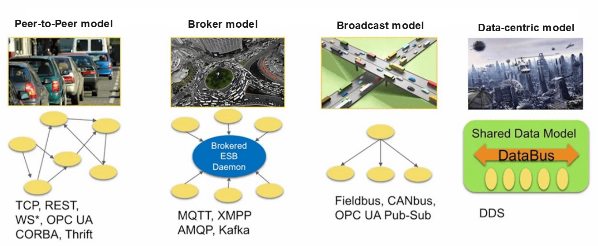
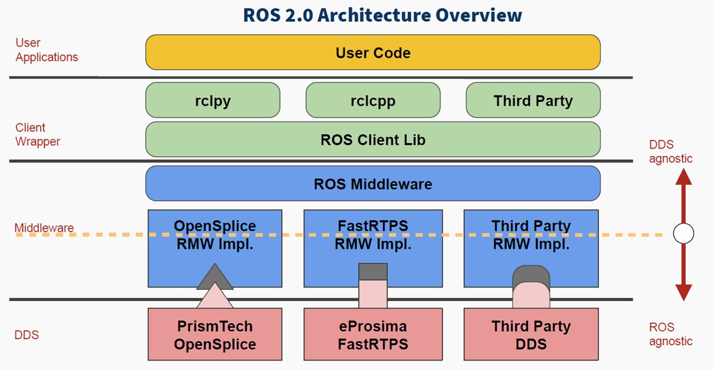
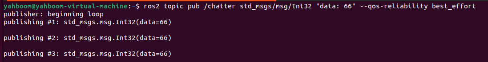
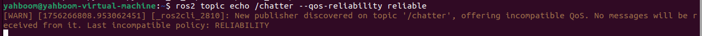
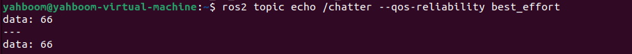
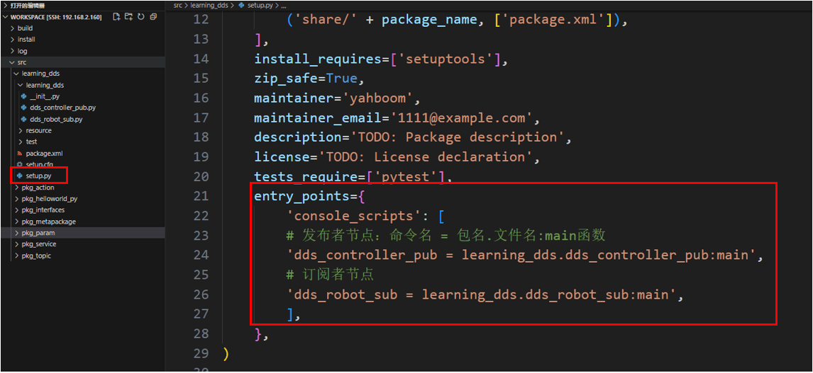
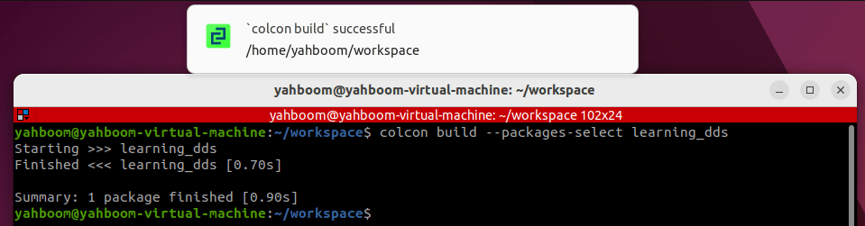
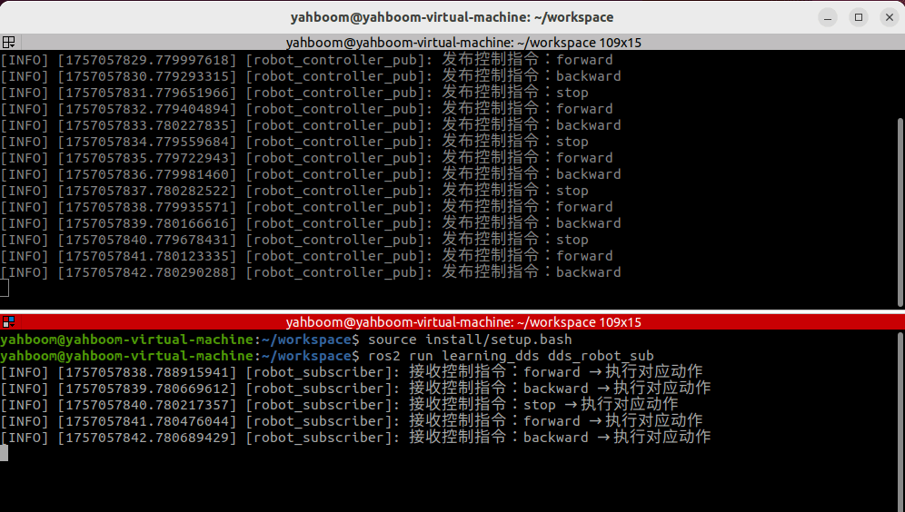
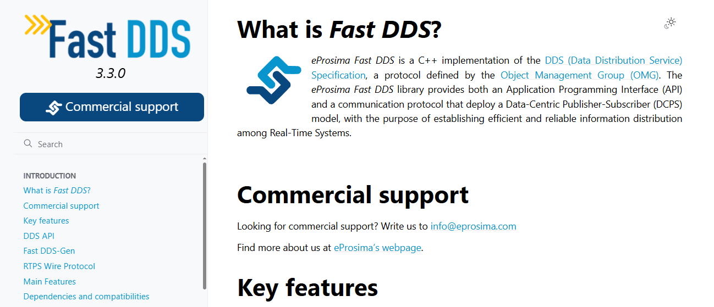

14. DDS в ROS2
1. Введение в DDS
DDS (Data Distribution Service, служба распределения данных) — это стандарт публикации/подписки на данные, опубликованный и поддерживаемый Object Management Group (OMG) в 2004 году, специально разработанный для систем реального времени. Впервые он был принят военно-морскими силами США для решения проблем совместимости при крупномасштабных обновлениях программного обеспечения в сложных сетевых средах кораблей. Сейчас он стал обязательным стандартом.
DDS ориентирован на данные (data-centric) и предоставляет богатый набор политик качества обслуживания для обеспечения работы в реальном времени, эффективного и гибкого распределения данных, отвечающего потребностям различных распределённых приложений реального времени.
Ссылки
- Официальная документация Fast DDS: 3.3.0
- Официальная документация ROS2 по расширенным возможностям DDS: Using Fast DDS Discovery Server as discovery protocol [community-contributed] — ROS 2 Documentation: Humble documentation
2. Модель коммуникации
Топики, сервисы и действия (actions), которые мы изучали в предыдущем курсе, — все они опираются на DDS для реализации коммуникации на нижнем уровне. DDS можно сравнить с нервной системой в робототехнической системе ROS.
В основе DDS лежит коммуникация. Существует множество моделей и программных фреймворков для реализации этой коммуникации. Здесь мы рассмотрим четыре наиболее распространённые модели.

- Первая, модель Peer-to-Peer (точка-точка), предполагает подключение множества клиентов к одному серверу. Каждый обмен данными требует установления соединения между двумя сторонами. По мере роста числа взаимодействующих нод растёт и число соединений. Более того, каждому клиенту необходимо знать конкретный адрес сервера и предоставляемые им сервисы. Если адрес сервера меняется, это влияет на всех клиентов.
- Вторая, модель Broker (посредник), оптимизирует модель "точка-точка". Брокер централизованно обрабатывает все запросы, а затем определяет роли, которые действительно могут ответить на сервис. Это избавляет клиентов от необходимости заботиться о конкретном адресе сервера. Однако проблема очевидна: как центральный элемент, скорость обработки брокера влияет на эффективность работы всех нод. Когда система достигает определённого масштаба, брокер может стать узким местом производительности всей системы. Более того, если брокер выходит из строя, вся система может перестать функционировать нормально. Прежняя система ROS1 использовала аналогичную архитектуру.
- Третья модель — модель Broadcast (широковещательная), в которой все ноды могут транслировать сообщения по каналу и принимать их. Эта модель решает проблему адреса сервера и устраняет необходимость отдельных соединений между взаимодействующими сторонами. Однако из-за огромного количества сообщений в широковещательном канале все ноды вынуждены обращать внимание на каждое сообщение, многие из которых не имеют к ним отношения.
- Четвёртая модель — ориентированная на данные модель DDS. Эта модель несколько похожа на широковещательную, где все ноды могут публиковать сообщения на шине данных (DataBus) и подписываться на них. Однако её преимущество заключается в том, что коммуникация включает несколько параллельных путей, позволяя каждой ноде фокусироваться только на интересующих её сообщениях и игнорировать остальные. Это немного напоминает вращающийся хого — все вкусные блюда передаются по шине данных, и каждая нода берёт только то, что ей нужно, а остальное её не касается.
Среди этих моделей коммуникации у DDS явное преимущество.
3. Применение DDS в ROS2
DDS играет ключевую роль в системе ROS2. Вся инфраструктура верхнего уровня строится на основе DDS. На этой архитектурной схеме ROS2 синие и красные компоненты представляют DDS.

Среди четырёх основных компонентов ROS добавление DDS значительно расширяет комплексные возможности системы распределённой коммуникации. Это позволяет нам не беспокоиться о вопросах коммуникации при разработке робота и сосредоточить больше времени на разработке других прикладных компонентов.
4. Качество обслуживания (QoS)
Базовая структура в DDS — это домен. Домен объединяет приложения для взаимодействия друг с другом. Напомним, что при настройке связи между Raspberry Pi и компьютером ранее настроенный доменный идентификатор определяет группировку глобального пространства данных. Взаимодействовать друг с другом могут только ноды в одной группе домена. Это предотвращает занятие ресурсов бесполезными данными.
Другая важная особенность DDS — качество обслуживания (QoS).
QoS — это политика сетевой передачи данных. Приложения указывают желаемое качество поведения при сетевой передаче, а служба QoS реализует это поведение, максимально удовлетворяя требования клиента к качеству коммуникации. Это можно рассматривать как договор между поставщиками и получателями данных.
Политики следующие:
- Политика DEADLINE: требует, чтобы данные передавались в пределах определённого срока.
- Политика HISTORY: указывает размер кэша для исторических данных.
- Политика RELIABILITY: определяет режим передачи данных. Настройка BEST_EFFORT обеспечивает плавную передачу данных даже при плохих условиях сети, что может приводить к потере данных. Настройка RELIABLE обеспечивает надёжную связь и максимальную целостность изображения/данных. Мы можем выбрать подходящий режим связи в зависимости от сценария применения.
- Политика DURABILITY: обеспечивает отправку определённого объёма исторических данных нодам, присоединившимся позже, что позволяет новым нодам быстро адаптироваться к системе.
5. Практические примеры
5.1 Пример 1 — настройка DDS через командную строку
- Откройте первый терминал и опубликуйте топик с помощью следующей команды:
ros2 topic pub /chatter std_msgs/msg/Int32 "data: 66" --qos-reliability
best_effort
- Откройте другой терминал и выведите топик с другой политикой QoS. Если используемая политика QoS отличается от политики публикующей стороны, появится предупреждающее сообщение о том, что данные топика не могут быть получены корректно:
ros2 topic echo /chatter --qos-reliability reliable
- Мы можем получать данные топика, используя ту же политику QoS, что и у публикующей стороны топика.
ros2 topic echo /chatter --qos-reliability best_effort



5.2 Пример 2 — настройка политик службы QoS для нод топика
- Создайте новый пакет функций с помощью следующей команды
ros2 pkg create learning_dds --build-type ament_python --dependencies rclpy
std_msgs
- Создайте новый файл, dds_controller_pub.py, как издателя для коммуникации по топику. Заполните его следующим содержимым:
import rclpy
from rclpy.node import Node
from std_msgs.msg import String
# Import QoS related classes
from rclpy.qos import QoSProfile, QoSReliabilityPolicy, QoSHistoryPolicy
class ControllerPublisher(Node):
def __init__(self, name):
super().__init__(name)
#1. Configure QoS policy: reliable transmission, retain the last
historical data
self.qos_profile = QoSProfile(
reliability=QoSReliabilityPolicy.RELIABLE, # Reliable transmission
(retransmission of lost data)
history=QoSHistoryPolicy.KEEP_LAST, # Keep the last N pieces
of data
depth=1 # Keep 1 historical data
)
# 2. Create a publisher: topic name /robot_cmd, message type String, QoS
policy
self.publisher = self.create_publisher(
String,
"/robot_cmd",
self.qos_profile
)
# 3. Create a timer: send a command once per second
self.timer = self.create_timer(1.0, self.timer_callback)
self.cmd_list = ["forward", "backward", "stop"] # Instruction List
self.cmd_index = 0 #Instruction index, loop switching
def timer_callback(self):
# Cycle switching instructions (forward → backward → stop → forward...)
current_cmd = self.cmd_list[self.cmd_index % 3]
# Create a message and fill it with data
msg = String()
msg.data = current_cmd
# Publish a message
self.publisher.publish(msg)
# Print log (shows issued commands)
self.get_logger().info(f"发布控制指令：{msg.data}")
# Update command index
self.cmd_index += 1
def main(args=None):
# Initializing ROS2
rclpy.init(args=args)
# Create a publisher node
node = ControllerPublisher("robot_controller_pub")
# Looping nodes
rclpy.spin(node)
# Destroy the node and shut down ROS2
node.destroy_node()
rclpy.shutdown()
if __name__ == "__main__":
main()
- Для реализации кода подписчика создайте новый файл dds_robot_sub.py и заполните его следующим кодом реализации подписчика
import rclpy
from rclpy.node import Node
from std_msgs.msg import String
from rclpy.qos import QoSProfile, QoSReliabilityPolicy, QoSHistoryPolicy
class RobotSubscriber(Node):
def __init__(self, name):
super().__init__(name)
# 1. Configure a QoS policy compatible with the publisher
self.qos_profile = QoSProfile(
reliability=QoSReliabilityPolicy.BEST_EFFORT,
history=QoSHistoryPolicy.KEEP_LAST,
depth=1
)
# 2. Create a subscriber: topic name/robot_cmd, callback function, QoS
policy
self.subscription = self.create_subscription(
String,
"/robot_cmd",
self.cmd_callback, # Callback function executed after receiving
data
self.qos_profile
)
def cmd_callback(self, msg):
# Callback function: Processes received instructions
self.get_logger().info(f"接收控制指令：{msg.data} → 执行对应动作")
def main(args=None):
rclpy.init(args=args)
node = RobotSubscriber("robot_subscriber")
rclpy.spin(node)
node.destroy_node()
rclpy.shutdown()
if __name__ == "__main__":
main()
- Настройте файл сборки (setup.py)
entry_points={
'console_scripts': [
# Publisher node: command name = package name. file name: main function
'dds_controller_pub = learning_dds.dds_controller_pub:main',
# Subscriber Node
'dds_robot_sub = learning_dds.dds_robot_sub:main',
],
},
- Откройте терминал в директории рабочего пространства и скомпилируйте пакет функций
colcon build --packages-select learning_dds
- Настройте переменные окружения. Переменные окружения необходимо настраивать каждый раз после повторной компиляции.
source install/setup.bash
- Запуск нод издателя и подписчика
ros2 run learning_dds dds_controller_pub
ros2 run learning_dds dds_robot_sub


Продвинутая разработка робота:
- Как правило, издатели и подписчики коммуникации по топику должны использовать одну и ту же стратегию связи QoS, чтобы избежать потенциальных проблем на уровне коммуникации.
- Настройки стратегии связи QoS следует выбирать в зависимости от конкретного сценария применения.
- Если сценарий применения связан со связью с дронами, зашифрованной связью, связью в реальном времени или другими сценариями с особыми требованиями к уровню коммуникации, официальное руководство Fast-DDS включено во введение к данному учебному курсу для более подробного описания возможностей DDS.

